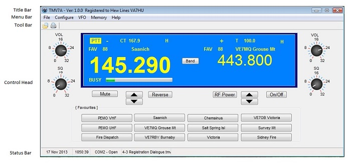
MF_1
and The Main Form is he form that provides the user interface to all functionality of the TMV7A application consists of a Title Bar, Menu Bar, Tool Bar, transceiver Control Head and Status Bar.
The TMV7A Title Bar contains a standard Windows System Menu, text displaying the application Version Number and Registration Status, and a set of WIndows System Icons.
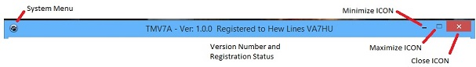
MF_2
Note that the application can only be Minimized and Maximized. Its screen size cannot be changed when displayed. It has been designed to open in the centre of the display and to be fully visible on an 800x600 size display used by notebooks. The display position may be changed, and the current display position is saved when the applicaition is closed. When re-opened, it will be displayed in the saved position.
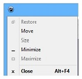
MF_3
The System Menu provides menu items and hot keys to Move, Minimize, Maximize and Close the application. All other functions are disabled.
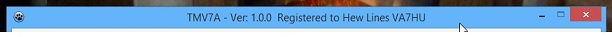
MF_4
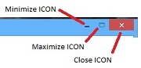
MF_5
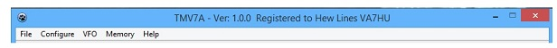
MF_6
The Menu Bar consists of five Main Menu items that provide:
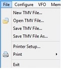
MF_7
The File Menu item consists of seven menu items that allow the user to access the following functionality:
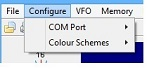
MF_8
The Configure Menu item consists of two menu items that allolw the user to:
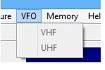
MF_9
The VFO Menu item allows the user to configure and select a VHF or UHF frequency.
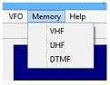
MF_10
The Memory menu item allows the user to select and configure:
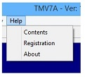
MF_11
The Help menu item allows the user to:
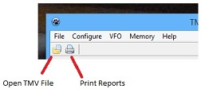
MF_12
The Tool Bar consists of two tool buttons:
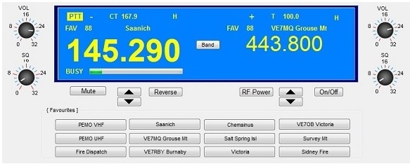
MF_13
The Control Head is the display of the Main Window of the application. It is designed to emulate the TMV7A front panel and LCD display as closely as possible and to provide additional visual and functional enhancements to the original transceiver functionality in two ways; The LCD Display Area and the Functional Controls.
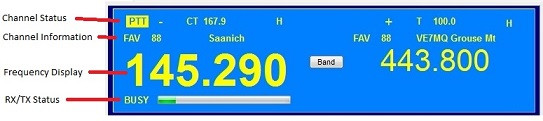
MF_14
The LCD Display consists of four areas, the:
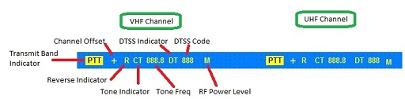
MF_15
The Channel Status area consists of two sets of status indicators, one for each band channel (VHF & UHF). Some of the indicators replicate the equivalent indicators from the transceiver directly and some replicate the status with a different indication. The following Status Indicators are available for each band:
The Transmit Band Indicator identifies the band that is currently selected The mnemonic "PTT" is displayed in inverted video and is always visible to the left of the status indicators for the selected band only. The non-selected band will display no PTT indicator.
The Channel Offset indicator displays the repeater offset configured for the selected channel. The possible indicators are "S" (Simplex - no offset), "+" (Plus offset) and "-" (Minus offset).
The Reverse Indicator ("R") indicates that the Repeater Reverse function has been selected with the Reverse button. The displayed Receive and Transmit frequencies for that channel will be displayed in reverse order the normal display.
The Tone Indicator has three states, "T" (PL Tone), "CT" (CTCSS Tone) or Off (nothing displayed), and indicates that either a PL Tone, CTCSS Tone or No Tone has been configured for the selected memory channel.
If a Tone has been selected for the current memory channel, then the selected Tone Frequency will also be displayed. If no tone has been configured, then no Tone Frequency will be displayed.
The DTSS Indicator "DT" indicates that the DTSS Code functionality and a DTSS Code has been configured for that channel.
The DTSS Code is a three digit code that can be configured for each memory channel. If the DTSS function is enabled, the three-digit code configured for that channel will be displayed.
The current Transmit RF Power level for the selected memory channel will be displayed using the mnmonics "H" (High), "M" (Medium) or "L" (Low). The default RF Power Level configured for the selected memory channel will be displayed unless changed by the RF Power button.
5.2.2 Channel Information Area
MF_16
Channel Information is displayed for both selected channels and consists of the memory channel type "VFO", "FAV" (Favourite Buttons) or "MEM" (Memory channels and the name assigned during channel configuration.
MF_17
The Frequency Display displays the Receive and Transmit Frequencies exactly the same as the TMV7A does. The selected frequency, is displayed in large, bold digits and the non-selected frequency is displayed normally. In Receive Mode the Receive Frequency is displayed and when in Transit Mode the Transmit Frequency is displayed.
MF_18
The RX/TX Status Line displays the transciever Receive and Transmit status of each band exactly as the TMV7A does.
If the channel is in Receive Mode, the RX/TX Status Line is blank unless a signal is being received, in which case the word "BUSY" is displayed along with a horizontal S-Meter bar displaying the current S-Meter reading. The length of this bar will vary depending on received signal strength (S-Meter reading).
if the channel is in Transmit Mode, the words "ON AIR" is displayed along with a horizontal RF Power bar displaying the current RF Power level selected for that channel (H, M or L).
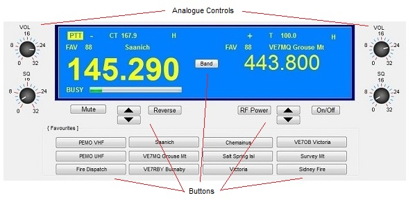
MF_19
The Functional Controls consist of four analogue controls (two Volume Controls and two Squelch controls) and 19 mouse-selectable buttons.
The Analogue Controls consist of two sets of Volume and Squelch controls, one on either side of the LCD Display (VHF controls on the left and UHF controls on the right).
The buttons are divided into two operational catagories:
Buttons not related to either channel. There are two buttons that are not either radio channel:
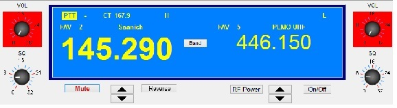
MF_20
Buttons related to a specific channel. These buttons provide functionality to the selected channel or are used to select a different band or channel.
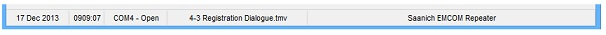
MF_nn
The Status Bar consists of five "panels", the:
Created with the Personal Edition of HelpNDoc: Free PDF documentation generator